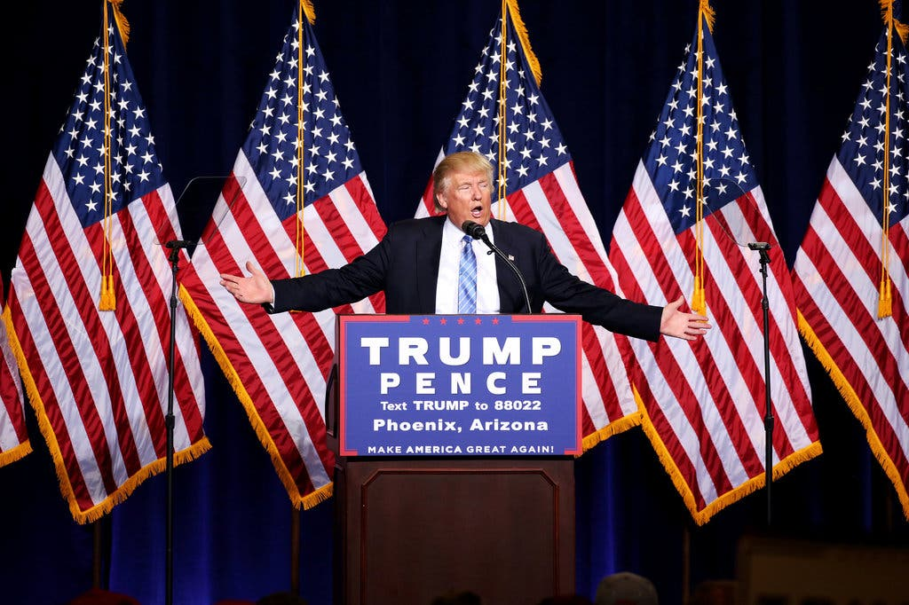
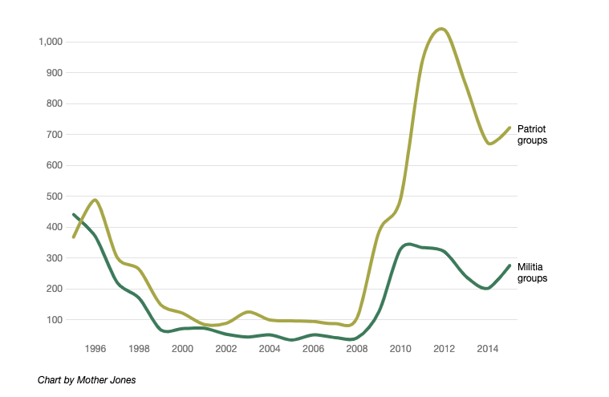

Obama’s warning, delivered at the height of what his administration described as a humanitarian crisis at the southern border, was part of the escalation in anti-immigrant rhetoric that emerged in 2014. The 2014 Border Crisis, as it is commonly described, gestures to the significant uptick in Central American unaccompanied children and families with young children migrating to the United States along the Southwestern border, and particularly at one sector of the Customs and Border Patrol — the Rio Grande Valley. In the public discourse, the crisis was framed alongside calls for “common sense immigration reform” that would keep the border secure by “protecting public safety and deporting dangerous criminals” while articulating the economic and social benefits of immigrants already in the United States and who “play by the rules”. These statements were accompanied by a slate of executive actions that expanded migrant detention (particularly for families and children), outsourced certain border patrol operations to Central American countries, and invested in technology, infrastructure, and resources along the southwestern border.
These unprecedented interventions set the scene for the future of border security for the remainder of the Obama administration and the soon-to-come Trump administration.
The Obama era calls for “commonsense immigration reform” were replaced in 2016 by President Trump’s increasingly violent and public calls to secure the border from “dangerous influxes” of immigrants at the southwestern border. This rhetoric reached a peak during in 2018, when a “caravan” of migrants from Central America approached the border. This resulted in executive orders to construct a physical border wall, as well as efforts to expand immigrant detention and border patrol forces, while limiting asylum protections.
These policy changes were mirrored by an increasing militarization of the border region that eroded constitutional protections and human rights along the southwestern border. The militarization of the border has meant an increase in the U.S. Border Patrol access to resources and authority, hiring of military veterans and use of military surplus in the border region, and a culture of violence and abuse that curtails human rights at the border. In other words, border militarization has increased the risks to the safety of migrants by expanded violent systems that treat migrants like enemy combatants, to be deported and detained.
The Trump administration rhetoric on border security has also inspired an uptick in far-right border vigilantes that have mobilized at the southern border to defend against this “invasion,” sometimes even collaborating with the U.S. Border Patrol to apprehend migrants. While Trump had called for National Guard troops to mobilize at the border, these far right militias organized to patrol the border as well. Particularly well publicized was a viral incident from New Mexico in April 2019, when Larry Hopkins and his United Constitutional Patriots armed militia group kidnapped and detained a large group of migrants at the border. While the Border Patrol claims not endorse the activities of these border militias, there’s a long history of collaboration between white supremacist militia groups and the Border Patrol, that is grounded in violent histories of American border.
These border vigilantes are situated in a much longer history of white supremacy, violence, and the U.S. Border. In 1977, the Ku Klux Klan, led by David Duke announced plans to patrol the U.S.-Mexico border to hunt and detain undocumented immigrants. While it caused an uproar, their plan of action was to move up and down the border and report any immigrants that they found to the closest Border Patrol station. Their actions mirrored a previous steps taken by armed anti-immigrant groups and nativists to keep out immigrants: the Know Nothings that attacked Irish and German neighborhoods across the East Coast in the 1800s, the Know Nothing affiliate groups that lynched Chinese immigrants in California in the 1850s, the Texas Rangers that prevented Mexicans from crossing the border after the Mexican Revolution in 1910, and the Knights of the KKK attacks on Vietnamese fisherman in the 1980s, among countless others . The Border Patrol itself was authorized to form by the Immigration Act of 1924 (a.k.a. the National Origins Act) which set strict quotas on the number of immigrants allowed to enter the United States from the Eastern hemisphere, as part of a set of immigration laws made to intentionally exclude and limit the numbers of Asian immigrants from the United States. In other words, U.S. immigration policy has always been backed by the threat and use of exclusionary, racist violence.
In recent years, border militia groups like the Three Percenters and United Constitutional Patriots, have organized trips to patrol the southern border. At the border, their operations are openly welcomed and sometimes even coordinated with Border Patrol agents. The far-right militia groups use intimidation as they patrol their border, openly carrying AR-15s and other tactical weaponry, and destroy life-saving food, water, and medicine that activists place for immigrants crossing. According to the Southern Poverty Law Center, these far-right militia groups operate like paramilitaries and often overlap with antigovernment groups, peddling conspiracy theories like QAnon. While these groups peaked during the Obama years, spurred on by the presence of a black president in office and the idea that Obama was welcoming undocumented immigrants, their presence has remained powerful on the border during the Trump-era.
The connections between federal immigration policy, white supremacy, and border violence are widespread and historically situated. Importantly, anti-immigrant violence tends to reinforce commonly held understandings of social ordering of U.S. society based on race and immigration. In other words, anti-immigrant violence is a necessary logic to the political and social making U.S. society—it determines identities of who is included and who is excluded. In recent years, the uptick in state-sanctioned and welcomed violence at the U.S.-Mexico border has been brought on by the Obama-era expansion of militarization of the Border Patrol and border, the Trump-era increase in institutional and discursive power of white supremacist movements, and overall popular antipathy by the public to deteriorating conditions of human rights at the U.S.-Mexico border and across the immigrant deportation and detention system in the United States.
This map charts Border Patrol apprehensions from 2014 to 2020, showing the massive upticks in apprehension rates at the southwestern border in 2014 and 2019 during the “crises” declared by Obama and Trump. The drop-off in detentions in 2020, gestures to a shift in border violence and policy created by President Trump’s “Stay in Mexico” Act, whereby the U.S. contracts the Mexican government to detain immigrants and enforce U.S. immigration law in Mexico, before migrants reach the U.S.-Mexico border. The Border Patrol defines apprehensions as “the physical control or temporary detainment of a person who is not lawfully in the U.S. which may or may not result in an arrest.” In other words, apprehensions refers to the number of people detained, deported, and cased for asylum by the U.S. Border Patrol.